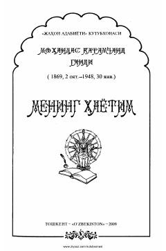

MHMahatma Gandining hayoti va ozodlik yo'lidagi kurashlariga bag'ishlangan avtobiografik asar.
Ushbu kitob buyuk davlat va siyosiy arbob Mahatma Gandining tarjimai holi bo'lib, uning hayoti va dunyoqarashi haqida hikoya qiladi. Asarda Hindiston xalqining mustamlakachilik zulmidan ozod bo'lish yo'lidagi fidokorona kurashlari va hayotiy qarashlari ochib berilgan.